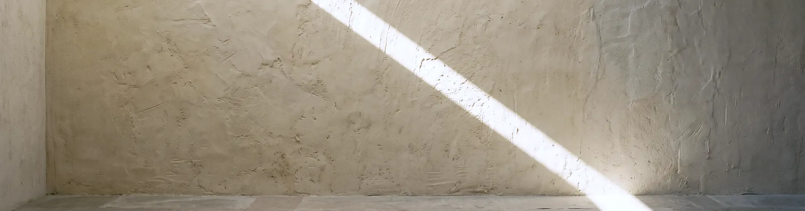
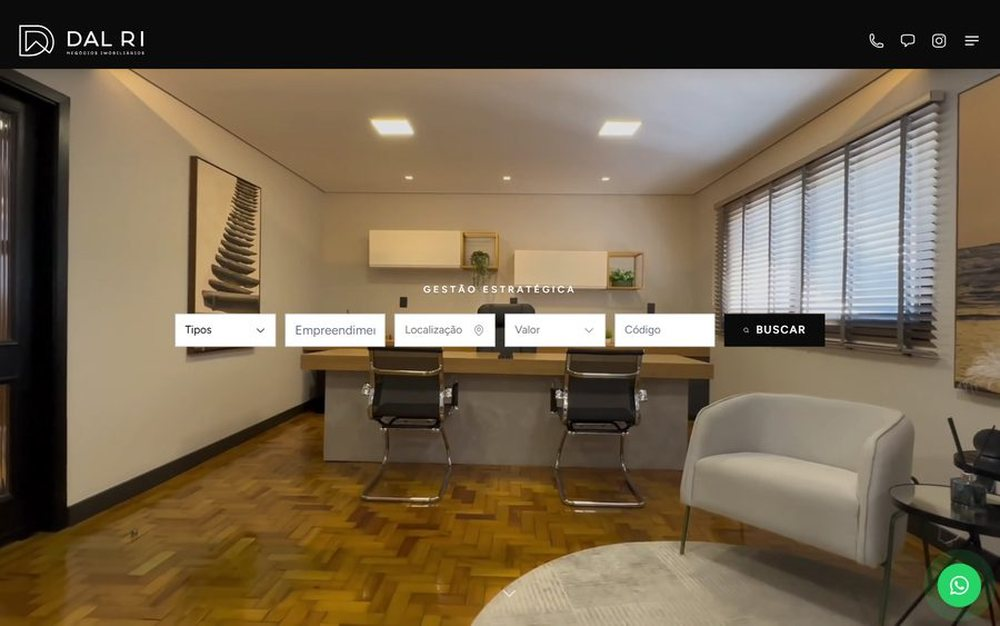
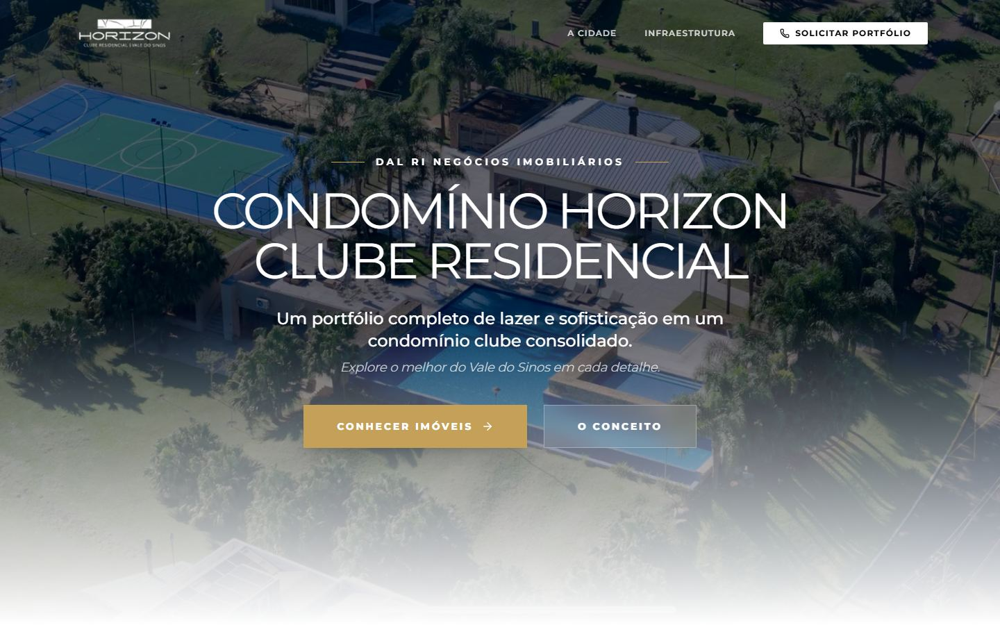
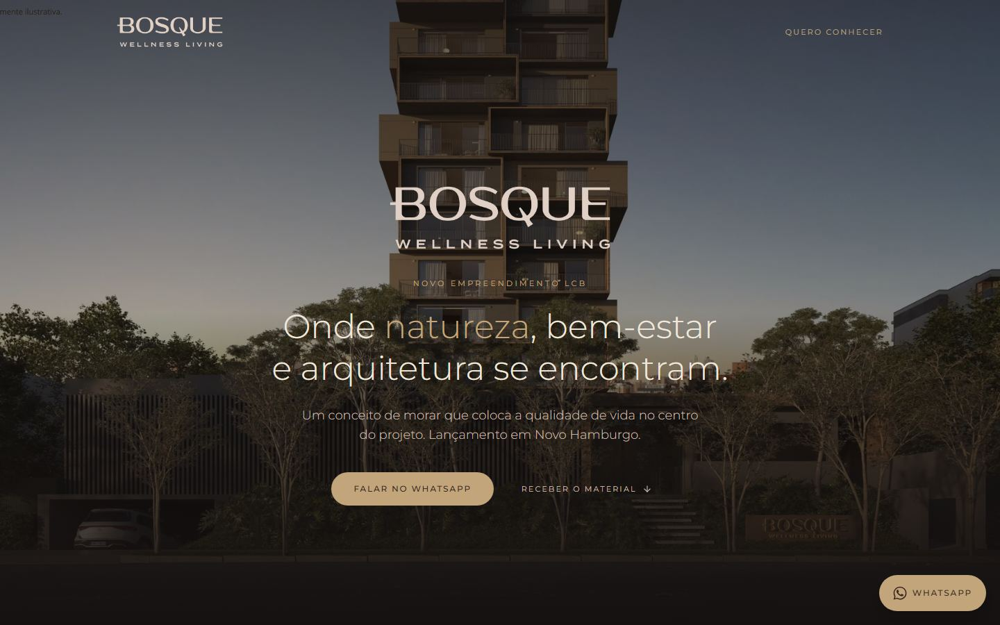
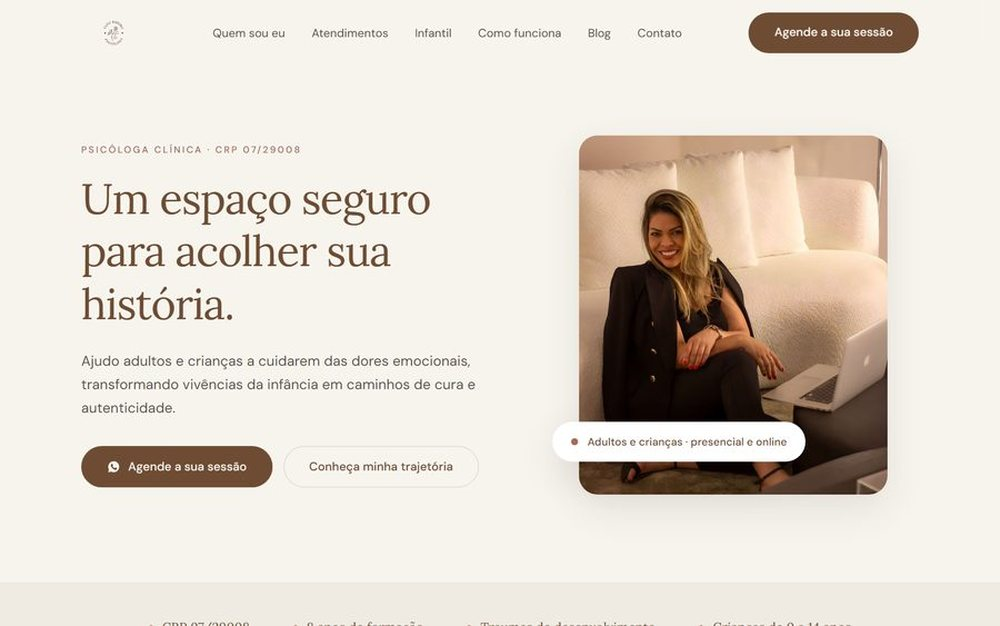
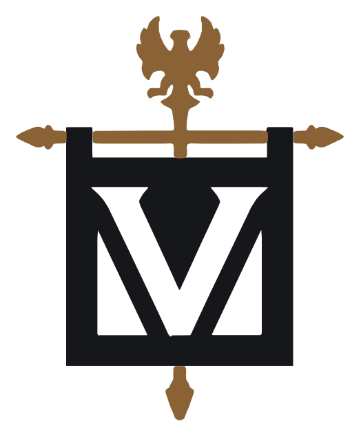

Sites e
sistemas
Site novo do zero, loja virtual ou sistema sob medida. Código próprio, sem construtor.
Ver no portfólioIdentidade
Como a marca se apresenta: nome, símbolo, cor e as regras que a mantêm inteira.
Site
Onde ela recebe quem chega e conduz até a decisão, sem ruído.
Vídeo
Como ela se move, onde a imagem parada não alcança.
Mídia paga
Até onde ela chega, e quanto disso volta em contato real.
BriefingNo ar

Site novo do zero, loja virtual ou sistema sob medida. Código próprio, sem construtor.
Ver no portfólioMarca, tipografia, paleta e os materiais que sustentam a promessa em cada ponto de contato.
Como trabalhoCampanhas montadas e acompanhadas mês a mês, com leitura de resultado e ajuste de rota.
Ver no portfólioO lead que chega pelo site entra no CRM e não se perde. Integração e fluxo ponta a ponta.
Ver no portfólio






Método,
na ordem
04
01
Mercado, concorrência e o que seus clientes já dizem sobre você. Uma leitura honesta de onde a marca está.
02
Para quem, contra quem e com que promessa. É a etapa que define preço, discurso e o que não fazer.
03
Marca, verbal e visual: nome, identidade, tom de voz e os materiais que sustentam a promessa.
04
Conteúdo e mídia paga levando a marca para fora, com leitura de resultado mês a mês.
09
negócios no ar, do site à gestão de tráfego, todos clicáveis nesta página.
Sobre
Para marcas que já têm produto bom e ainda não têm quem as siga. Quem me procura entrega bem e aparece mal.
O que acontece
O concorrente menor parece maior, e o preço precisa ser defendido em toda reunião.
O que eu fecho
A distância entre o que a conversa promete e o que o site sustenta.
Como a empresa chega
Nome, identidade e site saem da mesma decisão, então ela chega inteira onde o cliente encontrar você.

Vexillum era o estandarte erguido à frente da legião romana. O sinal que dizia quem avançava, e para onde.